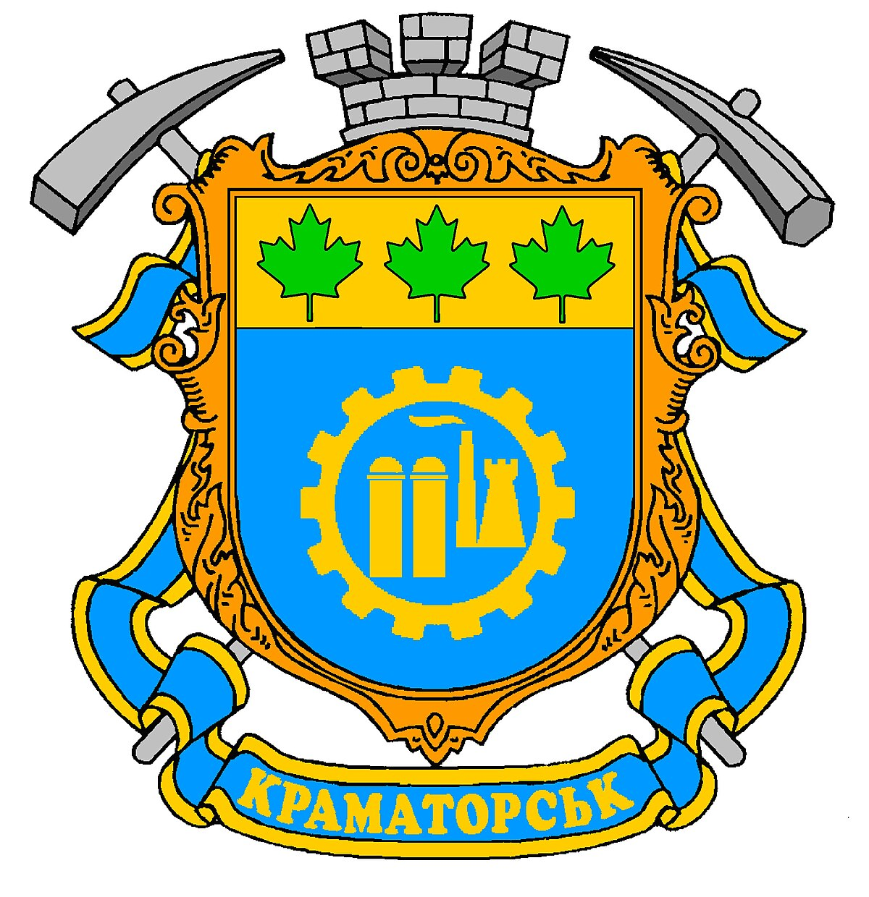
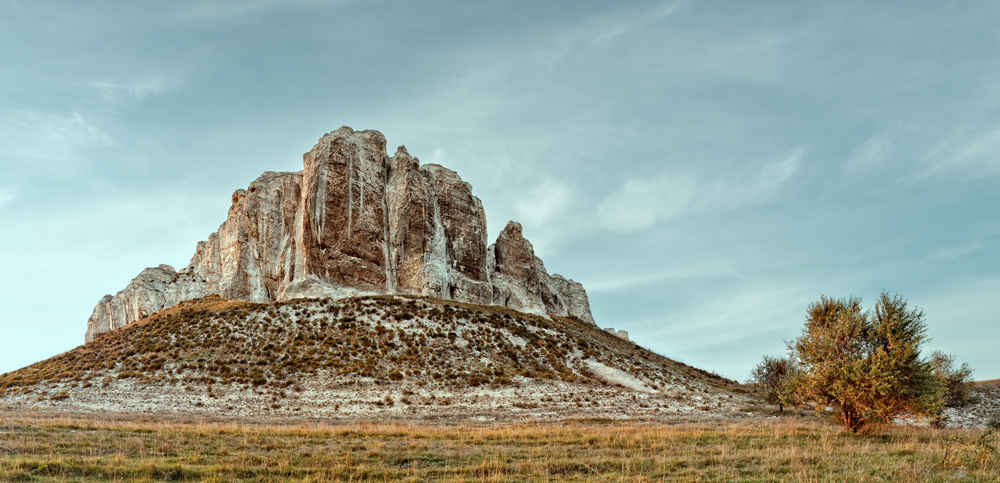
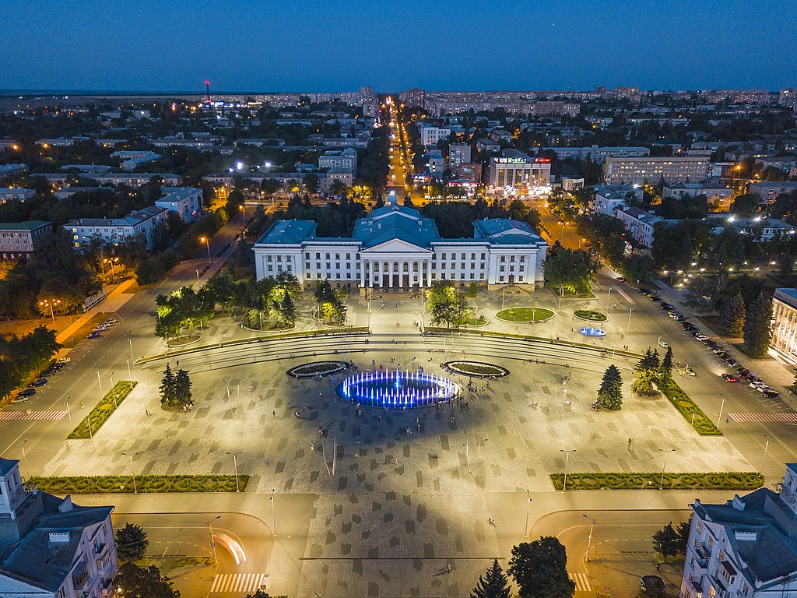
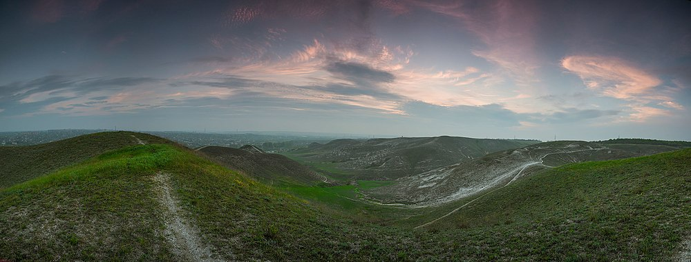

Історія нашого міста
Крамато́рськ — місто обласного підпорядкування в Донецькій області України, адміністративний центр Краматорської міської громади та Краматорського району.
Місто лежить на берегах річки Казенний Торець у північній частині Донбаського регіону.
Утворює Краматорську агломерацію з населенням у 642,8 тис. осіб. Значний центр машинобудування України.
Під час Російської збройної агресії проти України у 2014 році відбулася битва за Краматорськ.
З 11 жовтня 2014 року в місті перебуває Донецька обласна державна адміністрація.
Цікаві місця
В нашому місті є декілька цікавіх місць. Якщо навести курсор на фото - побачите опис:
  